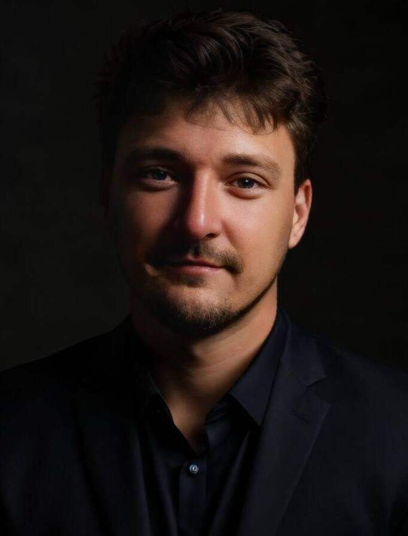

I deliver complex technology programs - on time, on budget, at scale.
PMP-certified leader with a PhD in Computer Science. I run multi-project portfolios across fintech, insurance, manufacturing, and retail - managing distributed teams and Fortune 500 stakeholder relationships.
What I do
Program & Portfolio Delivery
End-to-end ownership of multi-project programs, from roadmap alignment to go-live. Track record of on-time, on-budget delivery with high client retention.
Agile at Scale
Hands-on SAFe, Scrum, and Kanban implementation across organizations. Not just frameworks - building the delivery muscle through coaching and practice.
Stakeholder Management
Operating at the intersection of business and engineering - translating technical complexity into clear executive communication at VP/Director level.
Team Building & Mentoring
Built PM practices from scratch, mentored 100+ project managers, designed training programs. Grew account revenue 60% through team capability and trusted relationships.
Program Manager, Senior Program Manager, Head of PMO, Delivery Director - remote or hybrid in Europe. Currently based in Wroclaw, Poland.
Services
Program & Project Management
End-to-end delivery of complex tech programs. From roadmap planning and team setup through execution, risk management, and stakeholder reporting. Budgets from $500K to $20M+.
Agile & SAFe Coaching
Practical coaching for teams and organizations adopting Agile, Scrum, Kanban, or SAFe. Not theory slides - hands-on work with your teams to build real delivery cadence and predictability.
Executive & Startup Advisory
Advisory for C-level executives and startup founders on delivery organization, scaling teams, building PM functions from zero, and operational efficiency. Helping bridge the gap between vision and execution.
Experience
Senior Delivery Manager
Leading program-level delivery across multiple accounts for a NASDAQ-listed technology consulting company. Own a portfolio of 5+ concurrent projects with $20M annual budget. Manage 80+ engineers, QAs, designers, and PMs across 5+ time zones. Drove 30% improvement in delivery predictability and 60% account revenue growth.
Delivery Manager
Managed 5+ parallel projects across 3+ accounts. Delivered 20+ projects on time and within budget with 90% client satisfaction. Led teams of up to 50 people. Introduced Agile metrics that improved sprint predictability by 60%. Trained 200+ colleagues in Scrum/Agile practices. Managed P&Ls totaling $10M.
Delivery Manager
Established delivery management practices for the Ukrainian engineering hub. Successfully maintained 100% project continuity through the full-scale invasion in February 2022 - relocating team operations across Ukraine, Poland, USA, Armenia, and India.
Technical Project Manager
Led delivery of 10+ web/mobile projects for international clients. Managed teams of 30+ developers across 3+ concurrent projects. Reduced delivery delays by 30%. Owned project budgets totaling $1M.
Lead Project Manager / Technical Project Manager
Grew from first PM hire to lead PM overseeing the full project portfolio of a 50-person company. Built PM processes from zero. Introduced Scrum + Kanban, improving on-time delivery from 30% to 70%.
Quality Assurance Specialist
Started career in QA - gaining deep understanding of SDLC, testing processes, and engineering workflows that became the foundation of my delivery management approach.
Project Manager
First PM role - managing international B2B manufacturing orders with zero technical background. Coordinated structural engineers, technologists, and production workshops (stamping, welding, bending) for clients across Germany, France, Poland, Finland, and Romania. If you can manage a production floor with welders and international clients pulling in different directions, you can manage anything.
Teaching & Coaching
Project Management Coach
Designed PM curriculum covering Agile, Scrum, risk management, and stakeholder communication. Mentored 50+ students, 20+ of whom transitioned into PM roles.
Agile / Scrum Coach
Taught Agile and Scrum fundamentals with hands-on project simulations. 7 cohorts completed over 1 year.